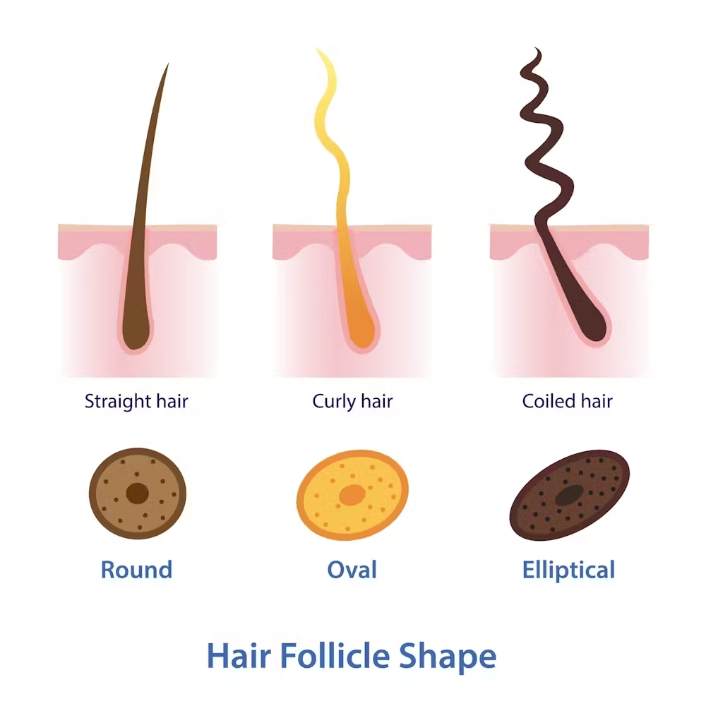

Black hair, brown hair, red hair, blonde hair. Long hair, short hair, straight hair, curly hair. Before you call me Dr. Seuss’ protege, let me explain!
There are a lot of factors that play into what type of hair we’ll have. You might be wondering how your hair transformed from blonde as a child to brown now why as a child. Or, even more bizarrely, how you had straight hair when you were younger, but as you grew older, it became wavy, or even curly. Trust me, there’s an explanation for all of this! Hint: it has to do with science!
Now, for a beginner’s introduction, let’s talk about hair color. As you may know, melanin is a pigment that is responsible for the pigmentation of our eyes, skin, and hair. Our hair color depends on the amount of melanin our bodies produce, which happens through a receptor called the Melanocortin 1 Receptor, or MC1R. People who have darker hair, like black or brown, produce a type of melanin called eumelanin. It is also responsible for some people having darker skin tones. But people who have lighter hair, such as redheads, produce pheomelanin instead. They have a mutation of the MC1R, and also carry a recessive gene for red hair from their parents.
When we are younger, our bodies typically produce less melanin than an adult body would. This is why some children born to parents of darker skin look lighter at first, and why some children who are born with light hair later develop darker hair. But why are many babies whose parents have curly hair born with straight hair? And why do some babies’ hair change from straight to curly as they age?
Spoiler: it all comes down to our follicles!
Our hair grows straight from our follicle. People with straight hair have perfectly round follicles, people with wavy hair have a kind of oval shaped follicle, but curly hair represents a completely elliptical, hooked follicle. It also grows out at an angle out of our scalp, while straight hair grows completely vertically.
As children, our follicles are still going through some major developments, including hormonal changes, so our hair texture from birth to toddlerhood isn’t exact. The hair that babies are born with is referred to as “lanugo,” first developing in the uterus and sometimes continuing after birth, resulting in silkier, straighter hair. But as a baby grows into a toddler, their hair changes to “terminal hair,” which is what our final hair type will likely look like.
Our curls are also dependent on these things called disulfide bonds, made from keratin, a protein. These bonds are responsible for the structure and strength of our hair strands, which also determine our hair type. The more disulfide bonds a person has, the more curly their hair will be!
But there are ways that we can manipulate the disulfide bonds in our hair. People with straight hair often get perms in order to make their hair appear curly; this is because perms break existing disulfide bonds and allow new ones (like the ones in naturally curly hair) to form. On the flip side, relaxer treatments, bleaching, and heat application break these bonds and alter the keratin structure, resulting in straighter hair.
There has been much discourse over what ingredients and what products are best for curlyheads. Oils such as coconut oil, argan oil, jojoba oil, and more are widely praised for the moisturizing tendencies for curls. There are also natural, humectant ingredients that can provide a lot of hydration and definition for curly hair, like aloe vera, flaxseed, okra, and marshmallow root. But, the bottom line is, no one can tell you what’s best for your hair besides you. It’s okay to go through a trial-and-error process with different products! Soon enough, you will find the perfect hair care routine for your curls.